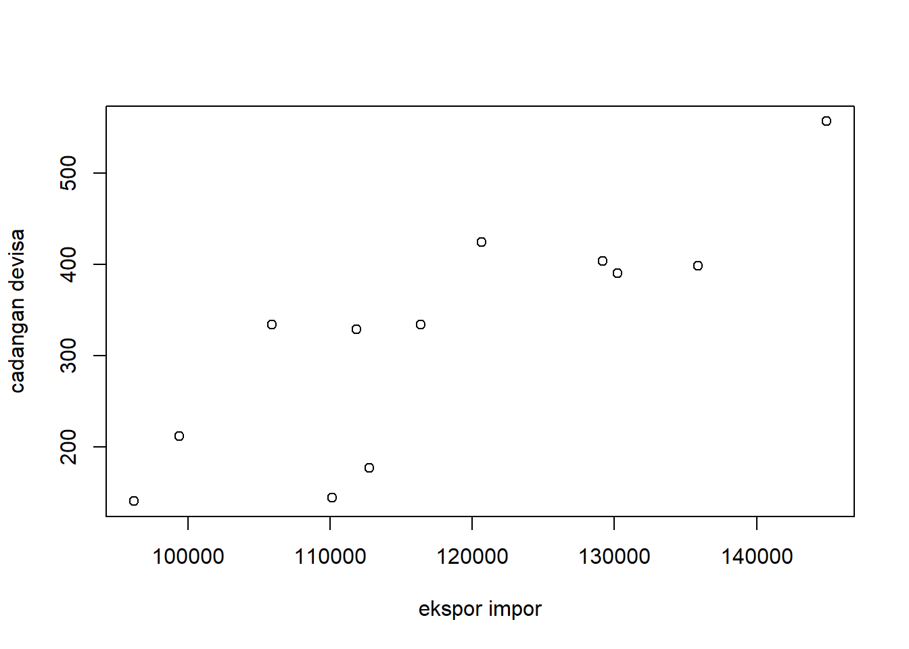
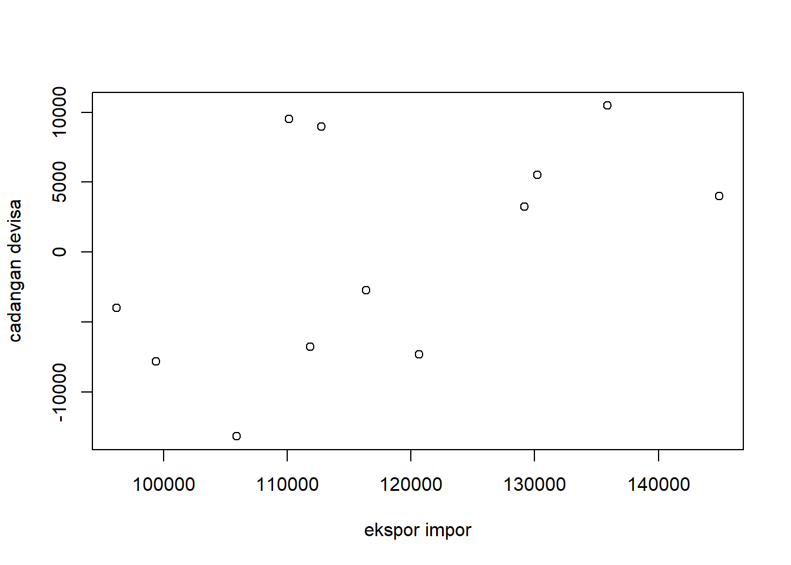

Melihat Hubungan Nilai Ekspor Impor dengan Cadangan Devisa Negara
PENGARUH NILAI EKSPOR IMPOR TERHADAP CADANGAN DEVISA NEGARA INDONESIA TAHUN 2010-2021
Author
SARAH TAMARA SINAGA
Published
January 13, 2023
0.1 Pendahuluan
0.2 Latar belakang
Ekspor Impor merupakan aktivitas utama dalam kegiatan Perdagangan Internasional yang dilakukan oleh dua negara atau bahkan lebih. Diadakannya kegiatan ekspor impor ini selain untuk memenuhi kebutuhan dalam negeri dan kebutuhan negara lain, tetapi bisa menjadi sarana kerja sama dengan negara-negara lain pula. Baik kerja sama ekonomi, politik, sosial budaya maupun dalam bidang kesehatan.
Cadangan devisa negara adalah seluruh aset luar negeri yang dikuasai oleh otoritas moneter dan bisa digunakan setiap waktu. Cadangan devisa yang tinggi dapat membuat sebuah negara yang memiliki cadangan devisa yang tinggi dapat menunjang kegiatan ekspor impor negara tersebut.
Kegiatan ekspor impor yang ditunjang oleh cadangan devisa yang tinggi memiliki dampak yang signifikan terhadap pertumbuhan ekonomi negara tersebut. Ekonomi negara yang tinggi dapat meningkatkan kesejahteraan dan taraf hidup masyarakatnya.
0.3 Ruang lingkup
Penelitian ini bertujuan untuk melihat seberapa besar pengaruh nilai ekspor impor negara Indonesia terhadap cadangan devisa negara. Data yang diambil sebagai bahan penelitian ini merupakan data ekspor impor Indonesia pada tahun 2010-2021 dan data cadangan devisa negara Indonesia pada tahun 2010-2021.
0.4 Rumusan masalah
Bagaimana nilai ekspor impor Indonesia dapat berpengaruh terhadap cadangan devisa negara?
0.5 Tujuan dan manfaat penelitian
Tujuan penelitian:
Mengetahui pengaruh nilai ekspor impor terhadap cadangan devisa negara Indonesia
Mengetahui besar cadangan devisa negara Indonesia dari nilai ekspor impor dalam 10 tahun terakhir
Mengetahui peran nilai ekspor impor Indonesia terhadap pertumbuhan cadangan devisa negara
1 Studi pustaka
Andri Feriyanto. Pengertian ekspor adalah perdagangan dengan cara mengeluarkan barang dari dalam ke luar wilayah pabean Indonesia dengan memenuhi ketentuan yang berlaku. ( Feriyanto, Andri, 2016:75 )
Menurut Rizieq (2006), cadangan devisa adalah total valuta asing yang dimiliki pemerintah dan swasta dari suatu negara. Cadangan devisa dapat diketahui dari posisi neraca pembayaran. Semakin banyak devisa yang dimiliki pemerintah dan penduduk suatu negara semakin besar kemampuan negara tersebut dalam melakukan kegiatan transaksi ekonomi dan keuangan internasional dan semakin kuat pula mata uang negara tersebut
Ekspor impor merupakan kegiatan yang dilakukan oleh negara-negara yang ada di seluruh dunia yang telah dilakukan dari zaman ke zaman. Hal ini dilakukan oleh sebuah negara guna mencari keuntungan dari negara lain serta menjalin sebuah hubungan multilateral dengan negara lain.
Tingkat ekspor dan impor merupakan suatu indikator untuk melihat tingkat perekonomian sebuah negara apakah mengalami surplus atau defisit pendapatannya. Selain diukur dari tingkat ekspor impor yang tinggi, cadangan devisa sebuah negara juga dapat dijadikan suatu indikator moneter yang sangat penting juga untuk melihat apakah perekonomian sebuah negara terlihat kuat atau lemah. Dua hal ini saling berhubungan untuk membentuk kesatuan tingkat perekonomian yang padu.
Bagi negara berkembang seperti Indonesia, tingkat ekspor impor yang stabil memegang peranan penting bagi stabilitas perekonomian Indonesia. Valuta asing yang didapatkan dari kegiatan ekspor impor ini juga turut menambah cadangan devisa yang dimiliki negara Indonesia.
2 Metode penelitian
2.1 Data Nilai Ekspor Impor dan Nilai Cadangan Devisa Negara Indonesia
Tahun
Ekspor Impor
Cadangan Devisa
2021
557.00 juta USD
144.905,4 juta USD
2020
398,6 juta USD
135.897 juta USD
2019
403,7 juta USD
129.183,3 juta USD
2018
424,71 juta USD
120.654,2 juta USD
2017
390,71 juta USD
130.196,4 juta USD
2016
333,86 juta USD
116.362 juta USD
2015
333,86 juta USD
105.931 juta USD
2014
329,07 juta USD
111.862 juta USD
2013
211,76 juta USD
99.387 juta USD
2012
177,07 juta USD
112.781 juta USD
2011
144,32 juta USD
110.123 juta USD
2010
140,23 juta USD
96.207 juta USD
Penelitian ini menggunakan data ekspor impor Indonesia dan cadangan devisa negara Indonesia tahun 2010 - 2021.
library(readxl)
Warning: package 'readxl' was built under R version 4.2.2
dang<-read_excel('DATA HUBUNGAN EKSPOR DAN IMPOR TERHADAP CADANGAN DEVISA NEGARA.xlsx')reg<-lm(Y~X, data=dang)plot(dang$Y,dang$X,xlab='ekspor impor',ylab='cadangan devisa')

library(readxl)dang<-read_excel('DATA HUBUNGAN EKSPOR DAN IMPOR TERHADAP CADANGAN DEVISA NEGARA.xlsx')reg<-lm(Y~X, data=dang)dang$u<-resid(reg)plot(dang$Y,dang$u,xlab='ekspor impor',ylab='cadangan devisa')

2.2 Metode analisis
Teknik analisis yang digunakan dalam penelitian ini adalah teknik kuantitatif dan penjabaran deskriptif. Teknik analisis kuantitatif merupakan analisis yang dilakukan dengan perhitungan angka-angka yang faktor yang mempengaruhi indeks cadangan devisa terhadap nilai ekspor impor ke Indonesia. Metode yang dipilih adalah regresi univariat atau Ordinary Least Square (OLS) dengan 1 variabel independen. Penelitian ini bermaksud mencari hubungan antara indeks cadangan devisa dan nilai ekspor impor. Spesifikasi yang dilakukan adalah : \[
y_{t}=\beta_0 + \beta_1 x_t+\mu_t
\] di mana \(y_t\) adalah Ekspor Impor dan \(x_t\) adalah Nilai Cadangan Devisa.
3 Pembahasan
3.1 Pembahasan masalah
Variable
Coeficient
Std.Error
t-Value
Prob
Intercept
-1.774e-07
8.781e-08
-2.021e+00
0.078
X
6.0589e-05
1.035e-16
6.367e+11
<2e-16
R-Square
1
Adjusted R-Squared
1
F-Statistic
4.054e+23
Prob(F-statistik)
<2.2e-16
Pengaruh Nilai Ekspor dan Impor Terhadap Nilai Cadangan Devisa Indonesia
Ekspor impor berpengaruh terhadap posisi cadangan devisa negara. Di tunjukan dengan dilihat dari probabilitis X (nilai ekspor) yang signifikan. Nilai ekspor impor sering menjadi faktor yang dapat mendorong naik dan turunnya posisi cadangan devisa negara. Nilai koefisien ekspor sebesar 1.52e-07 berarti kenaikan perubahan nilai ekspor impor berpengaruh terhadap cadangan devisa negara. Dengan hasil ini berarti pendapatan ekspor impor berpengaruh positif terhadap cadangan devisa negara.
3.2 Analisis masalah
library(readxl)dang<-read_excel("DATA HUBUNGAN EKSPOR DAN IMPOR TERHADAP CADANGAN DEVISA NEGARA.xlsx")reg<-lm(Y~X,data=dang)summary(reg)
Call:
lm(formula = Y ~ X, data = dang)
Residuals:
Min 1Q Median 3Q Max
-13172.8 -6910.0 260.4 6402.9 10474.1
Coefficients:
Estimate Std. Error t value Pr(>|t|)
(Intercept) 86516.92 6726.12 12.86 1.52e-07 ***
X 97.61 19.60 4.98 0.000554 ***
---
Signif. codes: 0 '***' 0.001 '**' 0.01 '*' 0.05 '.' 0.1 ' ' 1
Residual standard error: 8342 on 10 degrees of freedom
Multiple R-squared: 0.7126, Adjusted R-squared: 0.6839
F-statistic: 24.8 on 1 and 10 DF, p-value: 0.0005537
4 Kesimpulan
Kesimpulan yang didapat dari hasil penelitian ini adalah bahwa nilai ekspor impor memiliki pengaruh yang signifikan terhadap cadangan devisa negara Indonesia. Semakin besar nilai ekspor impor Indonesia, semakin besar pula jumlah cadangan devisa negara. Sebaliknya, jika nilai ekspor impor mengalami penurunan maka cadangan devisa yang dimiliki oleh negara juga mengalami penurunan pertumbuhan tahunan.